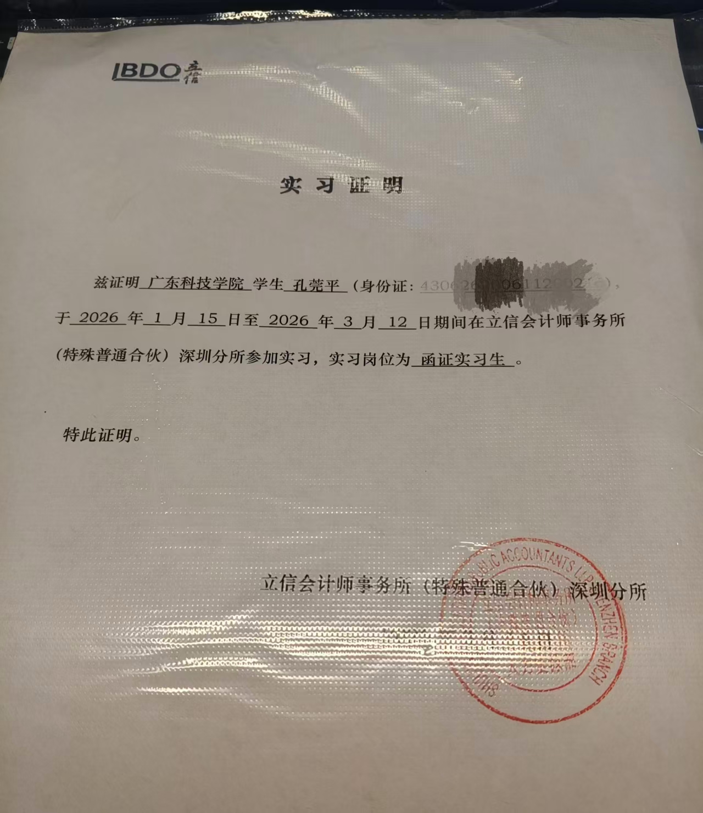
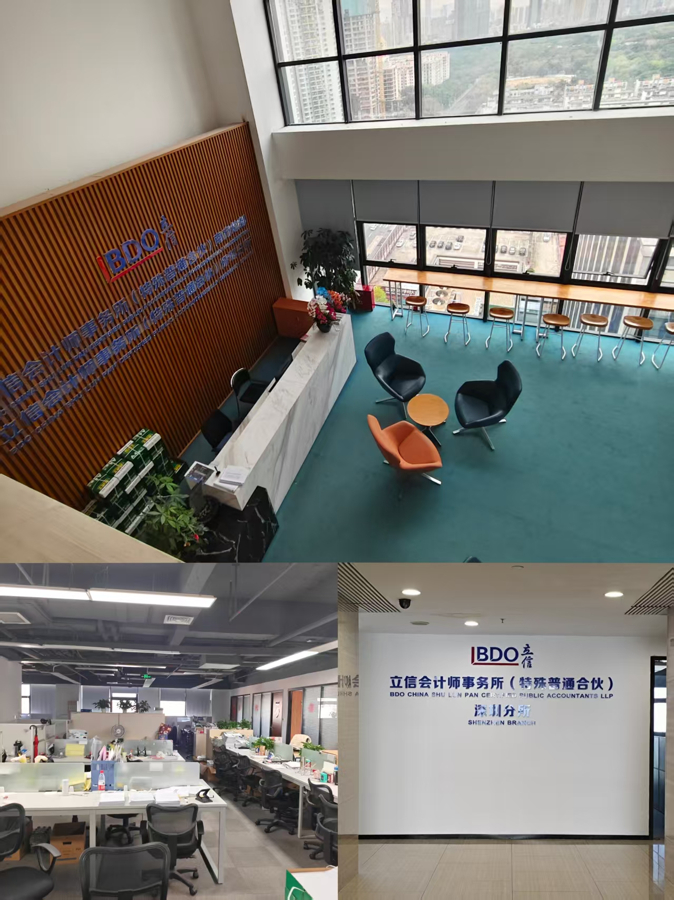

实习复盘 · 数据严谨性
立信函证实习复盘：审计教会我的「闭环思维」如何用于市场工作
全流程询证函制作 → 发函 → 回收 → 跟催闭环
上市公司 & 基金函证对象含多家知名上市公司及基金项目
高于行业均值经手项目的回函率水平
一、背景：函证是什么
2026 年初，我在立信会计师事务所（深圳分所）做审计函证实习生，所内办公。函证是审计里最基础也最关键的程序：向银行和往来单位发询证函，独立确认客户的存款和往来款项是不是真的——不信报表，信外部证据。
这份工作看起来枯燥，但它给我的东西，恰好是市场岗位最稀缺的。
二、我做了什么
- 参与多个审计项目的函证工作，函证对象含多家知名上市公司及基金项目，负责银行及往来款询证函的制作、发函、回函回收全流程，经手项目回函率高于行业平均水平；
- 用 Excel 维护函证控制表：发函数 / 回函数 / 未回函状态逐笔登记，VLOOKUP / COUNTIFS 做发函—回函匹配与差异核对；
- 回函整理、扫描归档，未回函的逐户跟催直到闭环；差异项登记后反馈项目组复核。
三、为什么这段经历对市场岗有价值
1. 函证就是一套「数据闭环」系统
每一封函都有状态：发出 → 在途 → 回函 / 未回函 → 跟催 → 关闭。没有一封允许「发出去就不管了」。这跟市场工作的逻辑完全同构：投放出去的每一条内容、每一场活动，都应该被追踪到结果为止。大多数市场实习生的通病，恰恰是「发了就完」。
2. Excel 是硬功夫
几百封函证的控制表，函数匹配、差异定位、状态汇总，每天都要快速准确地做。这不是简历上写一句「精通 Excel」，是真刀真枪用出来的。
3. 严谨是可以迁移的肌肉
金额差一分钱都要追到底的习惯，放在市场岗里就是：数据源要核对、口径要统一、结论要有出处。
四、复盘
✓ 做对了什么
把重复的函证流程整理成自己的控制表模板，效率高于要求；跟催及时，未回函始终保持在可控数量内。
把重复的函证流程整理成自己的控制表模板，效率高于要求；跟催及时，未回函始终保持在可控数量内。
✗ 可以更好
初期对函证差异的处理逻辑不熟，依赖项目组指导；只做了执行层，对函证在整体审计证据链中的位置理解还浅。
初期对函证差异的处理逻辑不熟，依赖项目组指导；只做了执行层，对函证在整体审计证据链中的位置理解还浅。
五、方法论沉淀
审计的「函证思维」翻译成市场语言：任何动作都要追踪到外部验证的结果为止——发出去的每一封函、投出去的每一分预算，都要有回音、有归档、有结论。
六、实习证明与办公环境
立信会计师事务所（BDO 中国）深圳分所实习证明（个人敏感信息已隐去）：

所内办公环境（深圳福田办公区）：

如 HR/面试官需纸质证明原件进一步背调，可通过微信 kgp061120 联系索取。返回← 回到首页，看全部复盘